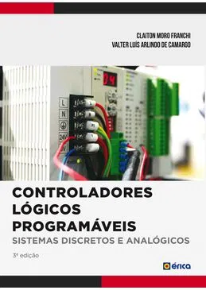
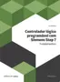
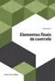
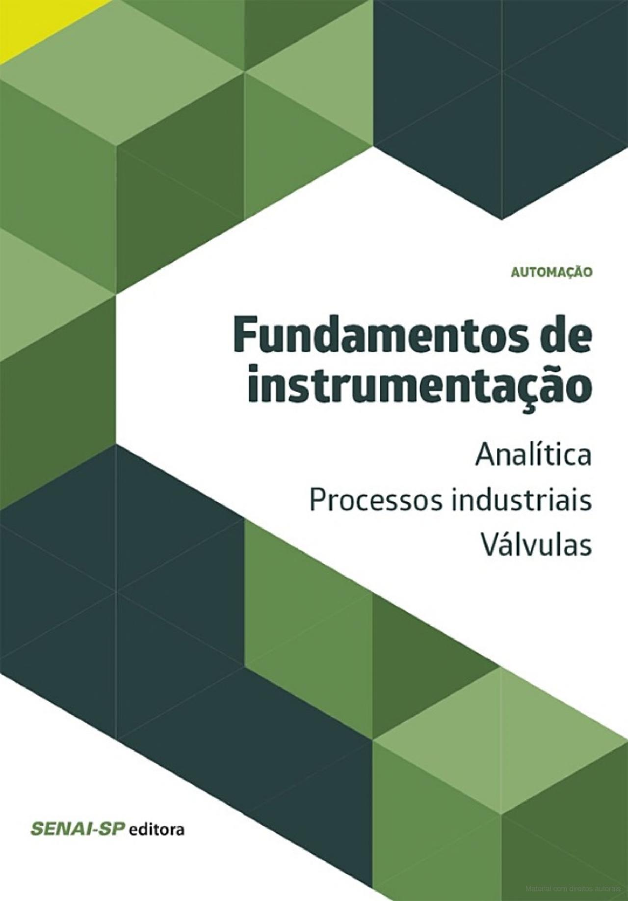
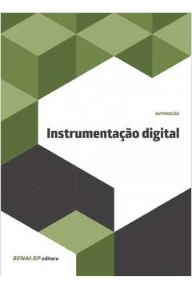
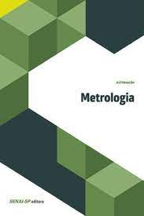
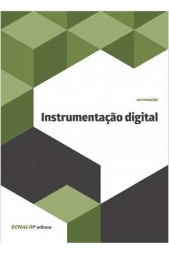
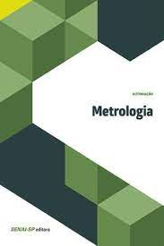

Controle automático de processos
Controle lógico programável com Siemens Step 7 - Fundamentos
 Fundamentos de instrumentação - Analítica / processos industriais / válvulas
Fundamentos de instrumentação - Eletrônica analógica
 


